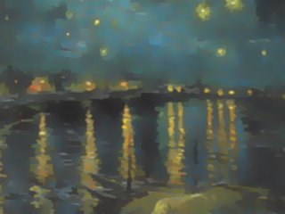

Image Analogies
- Final Project
Grace Goo
Suraj Modi
Siddhartha Gupta
The 3 of us found the topic of Image Analogies described in the paper1 to be very intriguing, and decided to take up this challenging project.
A computer vision field that has come into prominence in the past few years is that of NPR (non-photorealistic rendering), the creation of artistic styles by computer. A past project covered this in the B&W but we hadn't been able to attempt it, so we were keen to try it out with this project. Another cool effect that particularly fascinated us was the 'Texture by numbers' effect, where a scenic image is represented by a simple two or three color hand painted image. E.g. a path in a field represented by blue and dark red respectively, and then the scene is changed by simply repainting the image. (Repainting the blue to a circular blue, which renders a circular path, as shown below)
Application
The advantage of Image Analogies is the ease of image transformations, instead of a user needing to specify complex filters and algorithms, he can simply provide a training pair of images and generate the same effect for any other image. It is also useful for someone who has no experience with image filtering, however with an Image Analogies API, he could apply a filter to a target image.
Algorithm
Two images are taken, A and A', where A' is a filtered version of A, e.g. blurring, embossing, sketch, and the same effect is derived from the pair of images and applied to a new image B, to come up with the result B'.
Feature matrices are initially calculated for the three input images, which consist of R, G, B and Y, where RGB are self-explanatory and Y is the 'luma' component from the YIQ color space. The feature matrices are essential in the matching algorithms.
Approach 1: Regular and Binary Search - pixel by pixel
Pixels from B are looped through in scan line order, and for each pixel, a best search algorithm is employed to find its best match in A. Two methods were tried:
A brute force search going through each pixel of A, which took a noticeably long time, and a Binary search method which took lesser time comparatively. The binary search looked for the least difference between pair of pixels in A and B using the feature matrices (using sum of least squares to compute difference between 2 pixels), and returned the closest match:
bestDiff = bestDiff + sum(sum(((A(mid,i) - Bpixel(i)).^2)));
Once the pixel 'index' is retrieved, the respective pixel from A' (the filtered example image) is copied to B'.
Bprime(i,j,1) = featureAp(index,1);
Bprime(i,j,2) = featureAp(index,2);
Bprime(i,j,3) = featureAp(index,3);
Approach 2: ANN Search using patch of 5x5:
Now that we have already tried finding the nearest pixel, we modify the algorithm to build features based on a 5X5 patch instead of just 1 pixel at a time. We also multiply Gaussian weights to emphasize the middle pixels. Once we define the patch we build feature matrices for the images based on the patches and then apply the nearest neighbor search algorithm to populate the resulting image pixels. We have a used a simple open-source search algorithm and have not used the k-d tree implementation. The results turned out to be far better than the pixel by pixel algorithm but it took much longer.
Code snippet:
% Applying Weights to the feature Matrix for A
for count=1:size(featureA,2)
featureA(:,count) = featureA(:,count).*weightMatrixA;
end
% Adding pixels to the previously generated pad for featureB
for x = 1:size(imageB,1)
for y = 1:size(imageB,2)
% Builinding pad fot the featureMatrix Bprime to avoid egde cases
paddedfeatureBp = padarray(imageBp,[2 2], 0);
windowB = zeros(5,5,size(imageA,3));
windowBp = zeros(5,5,size(imageAp,3));
% traversing over the window to add the pixels from the padded feature
% matrix of b and bprime
for i=0:4
for j=0:4
windowB(i+1,j+1,:) = paddedfeatureB(x+i,y+j,:);
windowBp(i+1,j+1,:) = paddedfeatureBp(x+i,y+j,:);
end
end
windowBp = windowBp(repmat(mask, [1 1 size(imageAp,3)]));
% once the pixels are added and the window is tiled, we do the nearest
% neighbor search for adding pixels to bprime
for i=1:size(imageAp,3)
windowB(:,:,i) = windowB(:,:,i).*gaussianFilter;
end
windowB = [windowB(:); (windowBp.*weightMatrixAp).*(meanA/meanAp)];
% Getting the nearest neighbor the slow way
dists = L2_distance(windowB, dataSet);
[~, result] = min(dists);
[xA yA] = ind2sub(Asize, result);
imageBp(x, y, :) = imageAp(xA, yA,:);
end
fprintf('Finished row %d\n', x);
end
end
For the ANN algorithm over the patch of 5x5, we had help from a project online.3
The algorithm will work for most image filters, however it cannot be expected to learn and simulate all possible image filters, especially with only one training pair, as the paper says.
Results
The ANN algorithm with a patch of 5x5 yielded good results: (Images taken from NYU Media Research Lab2)
Oil Pastel:
|
 Van Gogh's 'Starry Night above the Rhone'
|
Filtered Image A'
|
The pixel by pixel binary search yielded a greenish image, it does seem to have the effect though:
Emboss:
 A A
|
 A' A'
|
 B B
|
B'
|
Colorization:
Texture by Numbers:
 B B
|
B' with patch of 5x5
|
|
|
B' with pixel by pixel search:
|
Watercolor:
This one turned out well, except the pixelation, which might be because we enlarged the image to show it better (We couldn't run the algorithm on large images due to it taking a lot of time)
Difficulties
We couldn't perfect the pixel by pixel binary search method, the filtering effect seemed to be present in B', however the result image took up a weird color tone entirely. Also, results were not in accordance where where there were very subtle effects, such as line sketches:
|
|
The sky isn't sketchy as it should be.
|
Texture transfer did not work:
1 Image Analogies A. Hertzmann, C. Jacobs, N. Oliver, B. Curless, D. Salesin. SIGGRAPH 2001 Conference Proceedings.
2 NYU Media Research Lab
3 CS UKY- Image Analogies{kind=link}


 A
A


{kind=link}
{kind=link}
{kind=link}
{kind=link}
{kind=link}
{kind=link}
{kind=link}
{kind=link}
{kind=link}
{kind=link}
{kind=link}
{kind=link}
{kind=link}
{kind=link}
{kind=link}
{kind=link}
{kind=link}
{kind=link}
{kind=link}
{kind=link}
{kind=link}
{kind=link}
{kind=link}